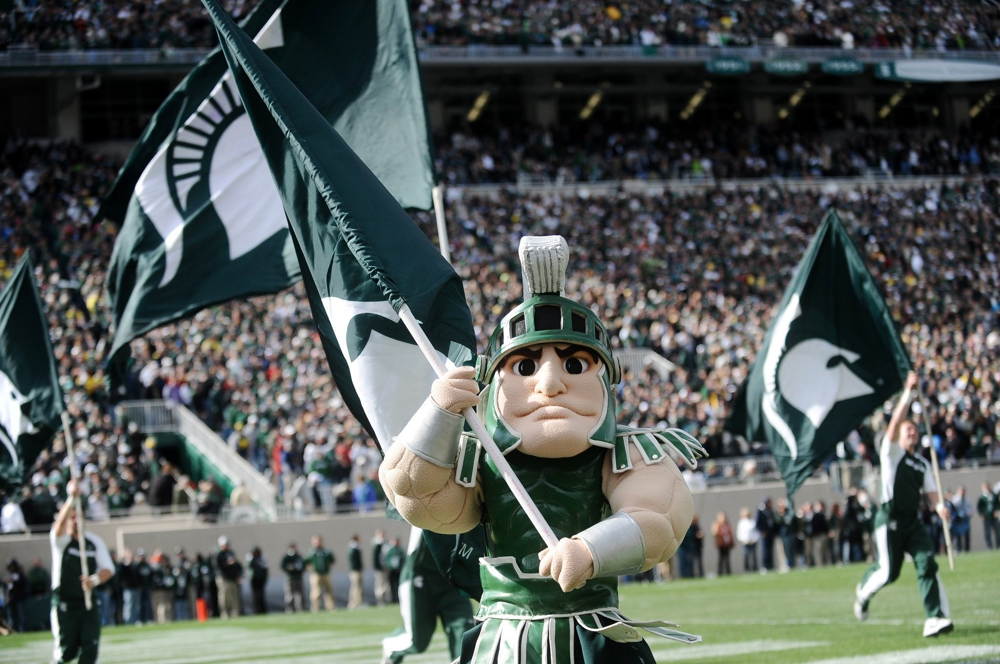
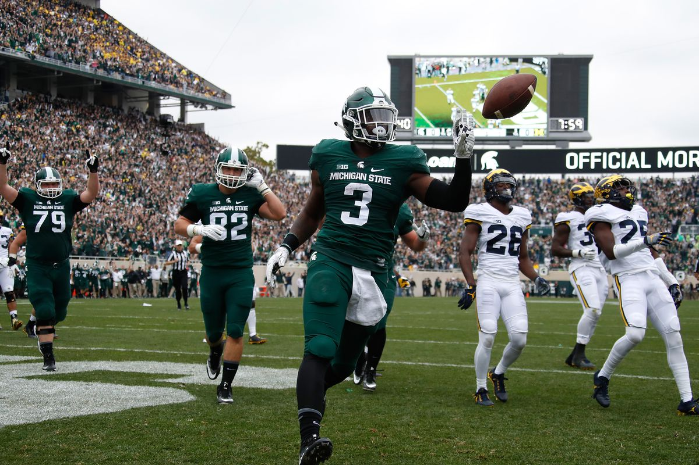

We're All hoping!
Just hopefully there's a 2020 football season! May 28th, 2020

Every football fan is hopeful football will be played the 2020/21 season.
The B1G conference, along with other conferences are in conversations to possibly play games with empty stadiums.
Now that will be different for the players, and fans!
Scoring on a rival!
GO GREEN! May 24th, 2020

I'm sure everyone who watched this game remebers Michigan State running back, LJ Scott, running in for
a Touchdown against the hated wolverines! I hope everyone there enjoyed watching this!